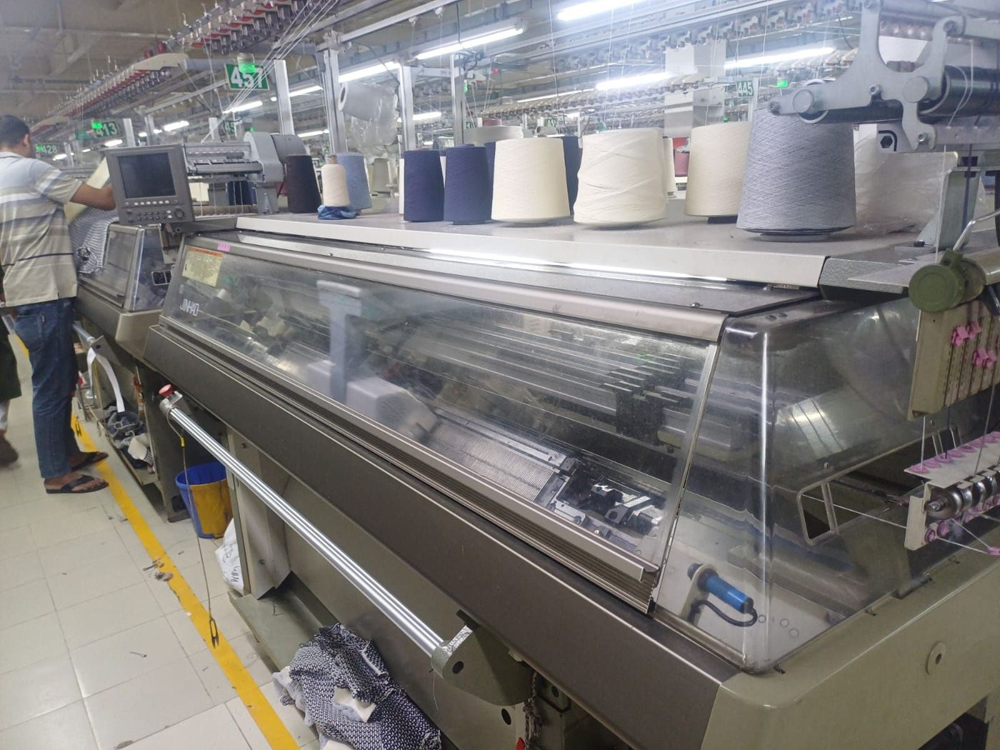
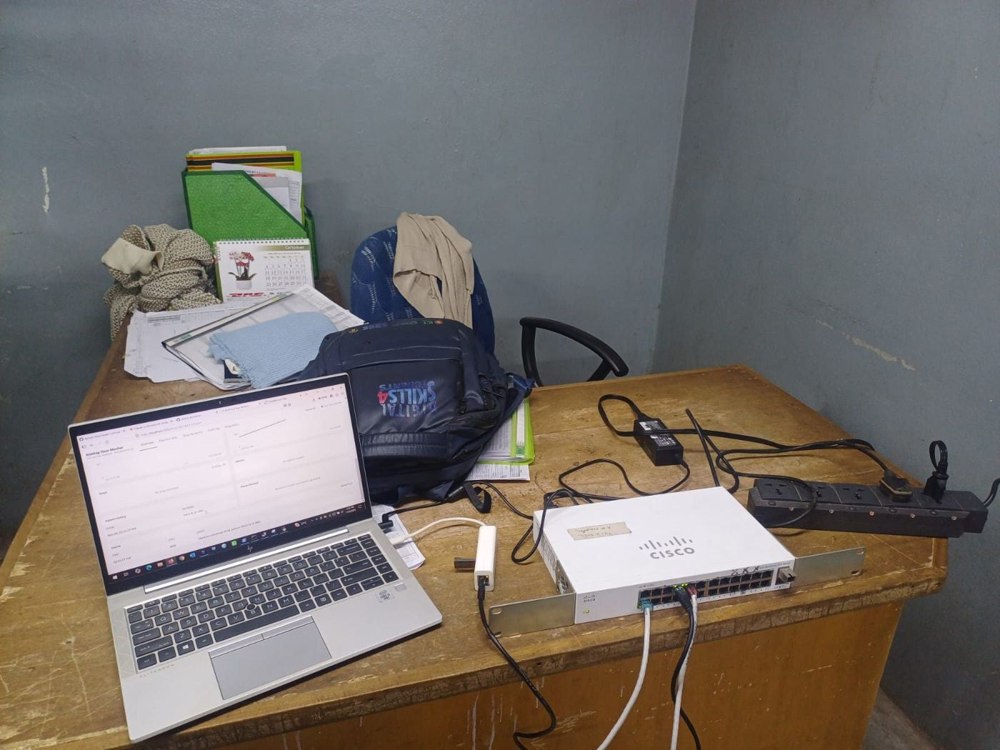
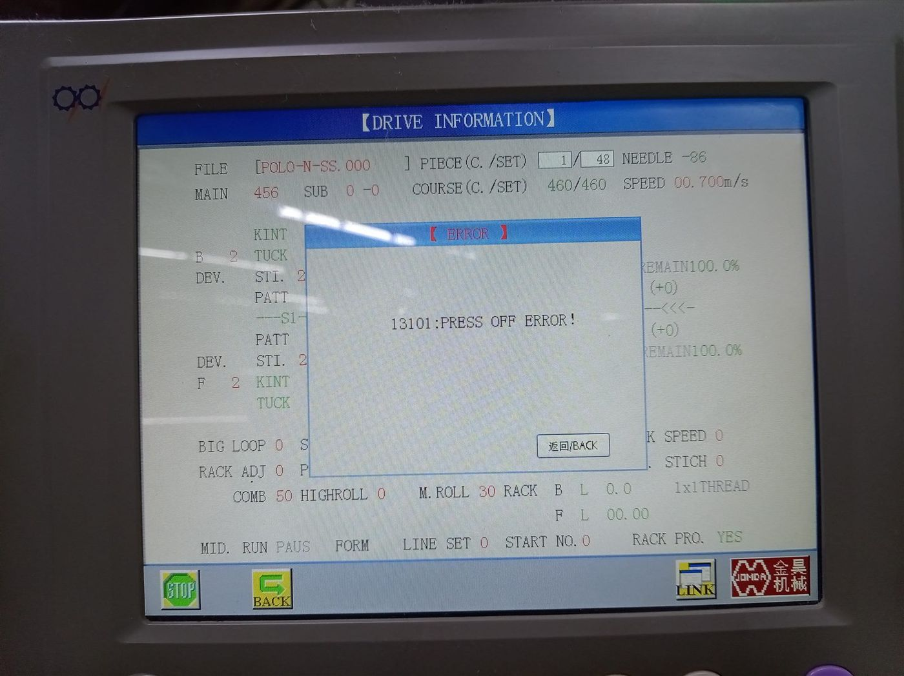
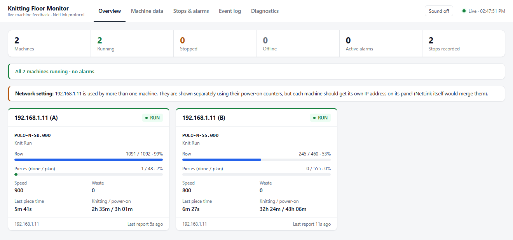
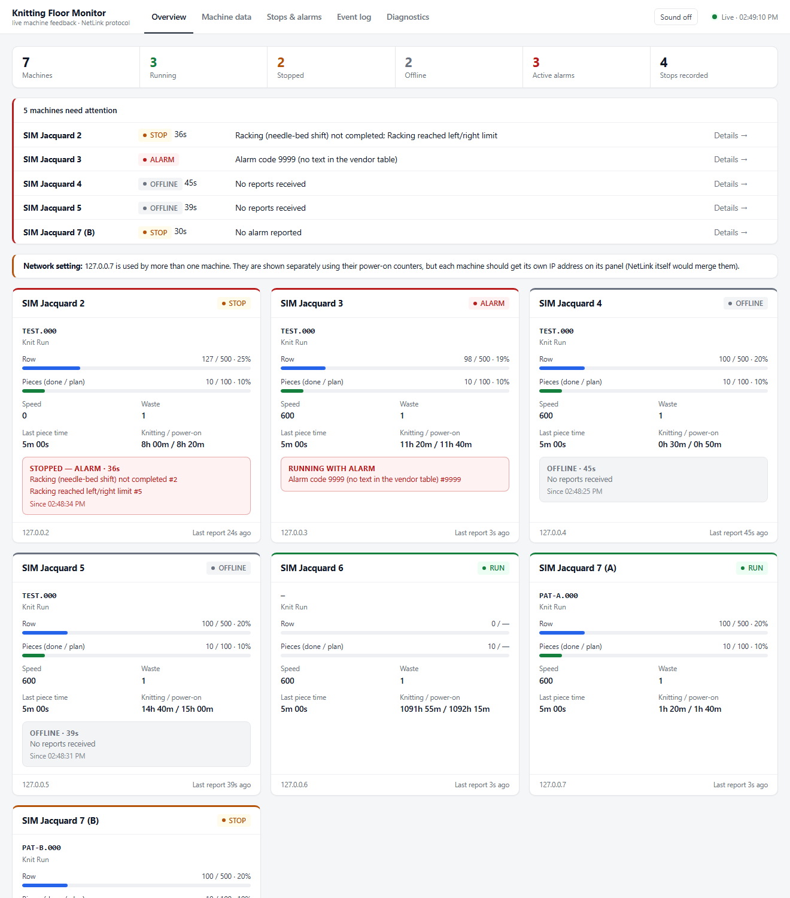
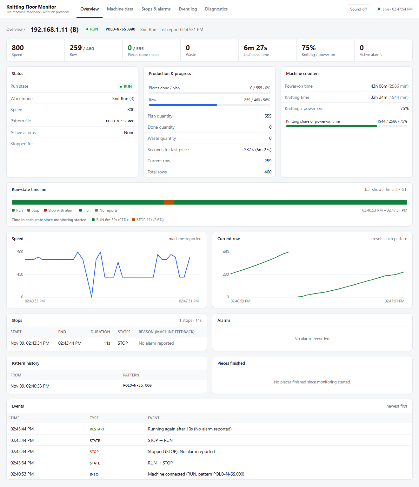
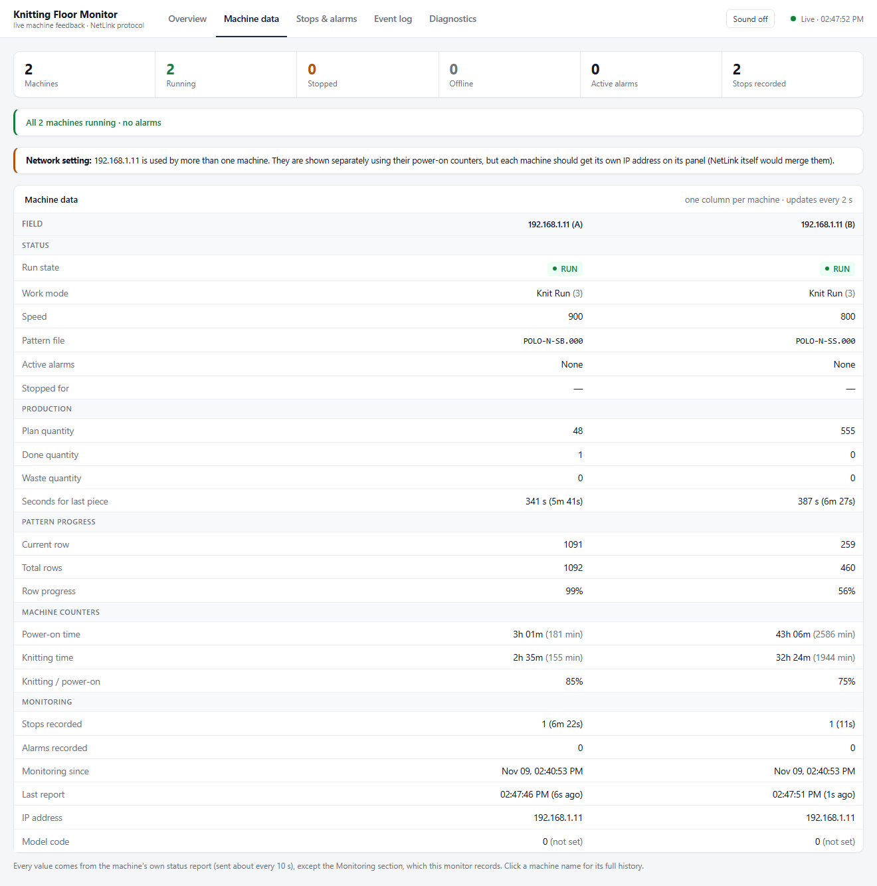
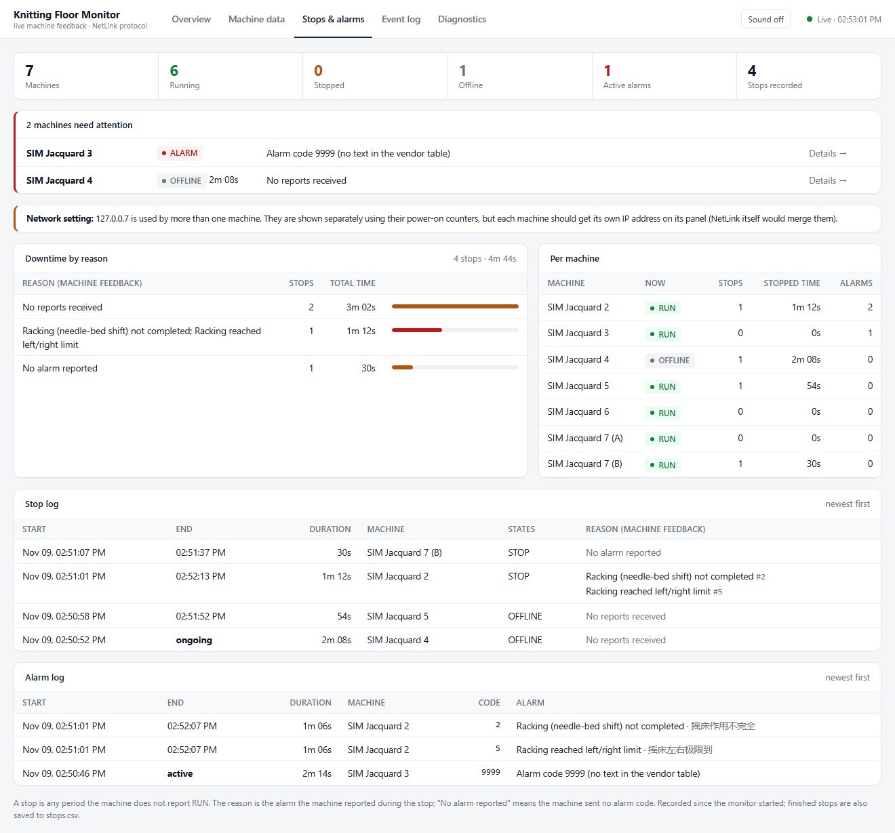
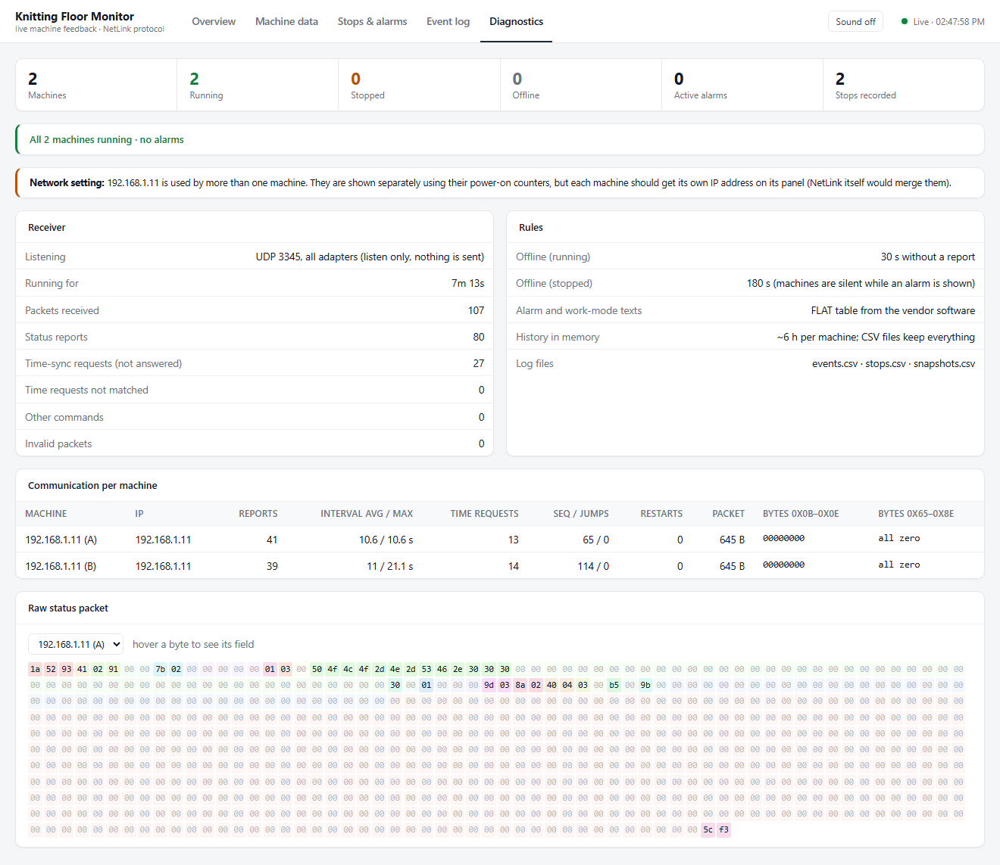

Knitting Floor Monitor
Live machine data over Ethernet from JINHAO GD-H122SA flat knitting machines. I decoded the vendor's GD NetLink UDP status reports and built a listen-only Python monitor with a live web dashboard that tracks run state, speed, cycle time, stops and alarms.

The machines were already talking. Nobody was listening.
What the floor could not see
Supervisors only learned a machine had stopped when they walked past it. There was no record of how long stops lasted, why they happened, or how much of each shift a machine actually spent knitting.
What was already on the wire
Each controller sends a 645-byte status report to a fixed server IP every ~10.6 seconds using the vendor's GD NetLink protocol on UDP 3345. The protocol isn't publicly documented. I worked out its layout byte by byte from captured packets.
Two machines, one switch, one laptop
| Item | Details |
|---|---|
| Knitting machines | 2 × JINHAO (JOMDA) GD-H122SA flat knitting machines, 52″ knitting width, gauge 5/7G, built 2025 |
| Network switch | Cisco CBS110-24T, unmanaged with 24 Gigabit ports. No configuration needed. |
| Monitor PC | HP EliteBook 840 G7 with a USB Gigabit Ethernet adapter, given a static IP that matches the server address stored on the machine panels |
| Software | Python 3.11 using only the standard library, plus one HTML dashboard page served at localhost:8080 |


From UDP packet to dashboard
- Machine sendsEach machine sends a 645-byte status report (command
0x9102) every ~10.6 s, plus a small time-sync request (0x9101) every ~18 s. Both carry a CRC-16 checksum. - Monitor receives and validates
server.pylistens on UDP 3345, checks the magic bytes and CRC, and decodes the report innetlink_proto.py. Invalid packets are counted and dropped. Nothing is ever sent back. - Identifies the machineNormally one IP means one machine. Both machines on site turned out to share an IP and MAC address (a factory default), so the monitor tells them apart by each one's power-on minute counter, with the packet sequence number and pattern as tie-breakers.
- Tracks stateA stop opens at the first non-RUN report and closes at the next RUN report. A machine counts as offline after 30 s without a report while running, or 180 s while stopped, because machines go silent for 30–80 s while an error dialog is on screen.
- Translates alarmsAlarm codes are translated with the vendor's FLAT alarm table (92 codes, English and Chinese). Start, end and duration are recorded, and the raw packet of every new alarm is saved for later analysis.
- Logs and servesWrites
events.csv,stops.csvand a once-a-minutesnapshots.csv, all of which open in Excel. The browser polls/api/stateevery 2 s, with an optional sound alert on a new stop or alarm.
Status report layout
These are the byte offsets I decoded from the 645-byte report. All numbers are little-endian, and the frame ends with a CRC-16/CCITT-FALSE checksum. I confirmed each field against the machine panel, the wall clock or an independent parser.
| Offset | Size | Field | Offset | Size | Field |
|---|---|---|---|---|---|
| 0x00 | 3 | magic 1A 52 93 | 0x53 | u16 | plan quantity |
| 0x03 | 1 | sequence number | 0x55 | u16 | done quantity |
| 0x04 | u16 | command 0x9102 | 0x57 | u16 | waste quantity |
| 0x08 | u16 | length L (packet = L + 10) | 0x59 | u16 | seconds for last piece |
| 0x0A | 1 | machine model code | 0x5B | u16 | speed (mm/s) |
| 0x0F | 1 | run state (0 STOP · 1 RUN · 2 INCH) | 0x5D / 0x5F | u16 | total rows / current row |
| 0x10 | 1 | work mode (3 = Knit Run) | 0x61 / 0x63 | u16 | power-on min / knitting min |
| 0x11 | 1 | active alarm count | 0x8F + 5·i | u16+3 | alarm code i |
| 0x12 | 65 | pattern file name | L+8 | u16 | CRC-16/CCITT-FALSE |
Five views, one page
Screenshots marked live show the real machines. Screenshots marked simulated come from a separate test copy fed by a fake-floor generator, used to show alarm, stop and offline states. The test copy writes its own logs, so test data never mixes with real data.






Nothing on the dashboard is estimated
I checked every value against an independent source: the machine's own screen, the wall clock, or a second decoder written separately.
Machine panel vs monitor, same minute
| Value | Machine panel (13:24) | Monitor record (13:23:50) | Result |
|---|---|---|---|
| Pattern file | POLO-N-SS.000 | POLO-N-SS.000 | match |
| Pieces (done / plan) | 1 / 48 | done 1, plan 48 | match |
| Rows (current / total) | 460 / 460 | row 460, rows 460 | match |
| Speed | 00.700 m/s | 700 | unit = mm/s |
| Error | 13101: PRESS OFF ERROR | silent, then STOP with no alarm code | not transmitted |
Other checks
| Check | Evidence | Result |
|---|---|---|
| Independent decoder | A separately written byte parser decoded the captured packets. All 17 fields were identical, and the CRC was valid on every packet. | pass |
| Power-on counter = minutes | The counter rose by 71 over 71.6 min and 70.6 min of PC-clock time. Knitting minutes never exceeded power-on minutes. | pass |
| Last-piece seconds | At the measured ~1.15 rows/s, a 1,088-row pattern should take ≈ 946 s. The machines reported 924–969 s. | pass |
| Stop, state and alarm arithmetic | Scenario tests drove the real server code with a fake clock: alarm stop, offline, restart, shared IP and identical counters. The totals always added up. | pass after fixes |
| Edge cases | 7 simulated machines covered 50 s of silence during an alarm, an unknown code, going offline while running, a counter reset, a 65535 → 0 counter wrap, zero plan or rows, and an empty pattern. | pass |
What 95 minutes of real production showed
| Machine | Power-on | Knitting | Knitting / on | Speed min / avg / max | One set (SS+SB+SF) |
|---|---|---|---|---|---|
| M-555 | 95 min | 92 min | 97% | 400 / 715 / 900 | ≈ 38.5 min |
| M-48 | 94 min | 74 min | 79% | 650 / 778 / 900 | ≈ 36.7 min |
Stops recorded
| Machine | Start | Duration | Reason (machine feedback) |
|---|---|---|---|
| M-48 | 13:23:42 | ≈ 2m 17s | Panel showed 13101 PRESS OFF ERROR. The network showed silence, then a STOP with no alarm code. |
| M-48 | 13:31:34 | 1m 30s | Alarm 59: Fabric wrapped on main roller (front) |
| M-555 | 13:47:51 | 21s | No alarm reported |
| M-555 | 13:51:09 | 1m 15s | Alarm 62: Large yarn knot detected |
| M-48 | ≈ 14:30:30 | ≈ 16m 45s | No alarm reported |
| M-555 | 14:50:01 | 53s | No reports received, then STOP |
Short stops (≤ 21 s) are partly omitted here. The monitor was restarted several times during development, so very short stops at those moments may be missing.
Turning the data into efficiency
Operator
Reacts to a stop in seconds instead of when walking past, knows the error before reaching the machine, and can be ready when a piece is about to come off (SS pieces every ~6 min, SB/SF every ~16 min).
Line supervisor
Spots machines standing still with no alarm, balances operators across machines, and checks that speed settings match the standard.
Maintenance
Fixes recurring faults first using downtime by reason: fabric wrapping points to a take-down or roller tension check, and yarn knots point to the yarn supplier or splicing quality.
Planning
Uses real cycle times instead of estimates. One set takes ≈ 37–39 min, so a machine at 97% utilisation makes ≈ 1.5 sets per hour, and at 79% ≈ 1.3.
Recommendations from the deployment
Unique IP per machine
Both controllers shipped with the same IP and MAC address. The monitor copes, but the vendor's NetLink software would merge them. Each machine needs its own IP before more are added.
Not every error is sent
Panel error 13101 (PRESS OFF ERROR) stopped a machine without transmitting an alarm code, so these errors need recording by hand for now.
Controller clock drift
One controller's time-sync request carried a 2007 date, so its own panel logs have wrong timestamps. Set the clock.
Always-on monitor PC
Logs are only complete while the monitor runs. Use a dedicated PC that starts it automatically. Only one program can bind UDP 3345.
Daily no-alarm review
The largest loss had no machine error, so reviewing no-alarm stops with supervisors is where the time is.
Scale out
The monitor handles any number of machines on the same 24-port switch, with one card and one column each.
Limitations
- Stop start and end times are accurate to one report (~10 s).
- Only shows what the machines send. Operator IDs, order numbers and some panel errors aren't available.
- The alarm block isn't yet confirmed from raw bytes (codes 59 and 62 decoded to sensible texts). The monitor now saves every alarm packet to close this gap.
- Results cover 95 minutes on 2 machines. Trends need several days of data.
What it's built with
Receiver
server.py handles the UDP listener, state, stop and alarm logic, CSV logs and the JSON API, using only Python's standard library.
Decoder
netlink_proto.py parses GD NetLink frames and status reports, with CRC checking and a built-in self-test.
Testing
Scenario tests drive the real server code with a fake clock, and fake_floor.py simulates machines on loopback IPs.